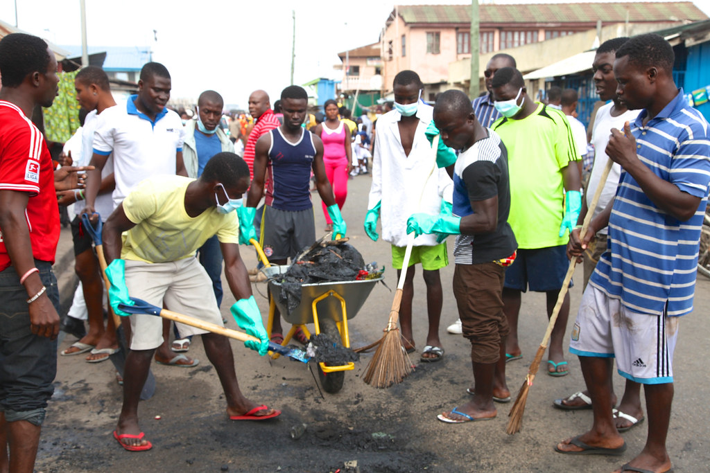
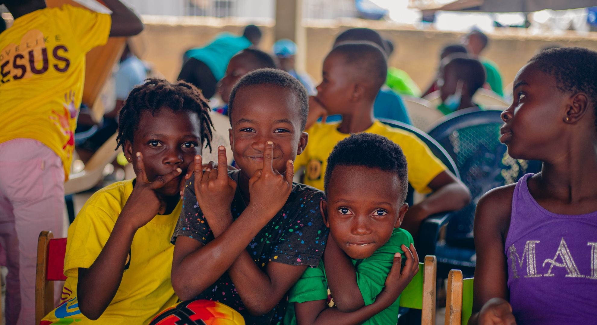
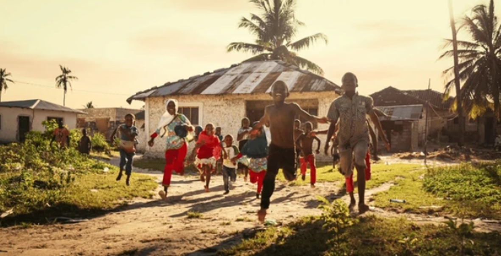

AMI Cares Foundation
AMI Cares Foundation
Changing lives through compassion and action
AMI Cares Foundation is a community-driven non-profit organization committed to improving the lives of vulnerable individuals and underserved communities.
A society where every individual lives with dignity and access to basic needs.
To provide care, support, and essential services to vulnerable communities.

Clean Water Support

Sanitation & Hygiene

Community Outreach

Clothing Donations

